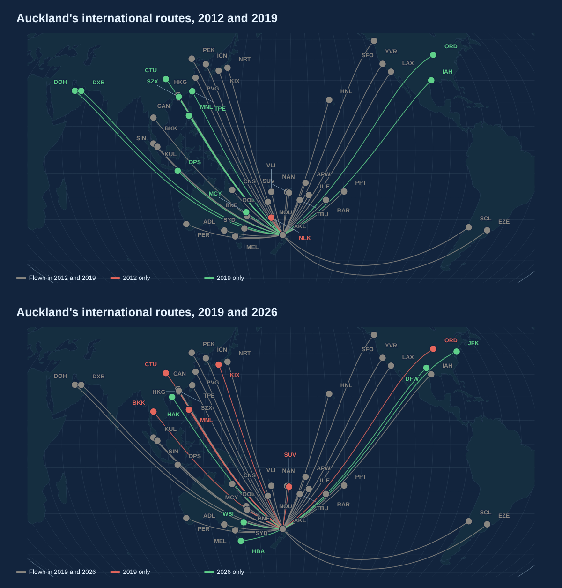
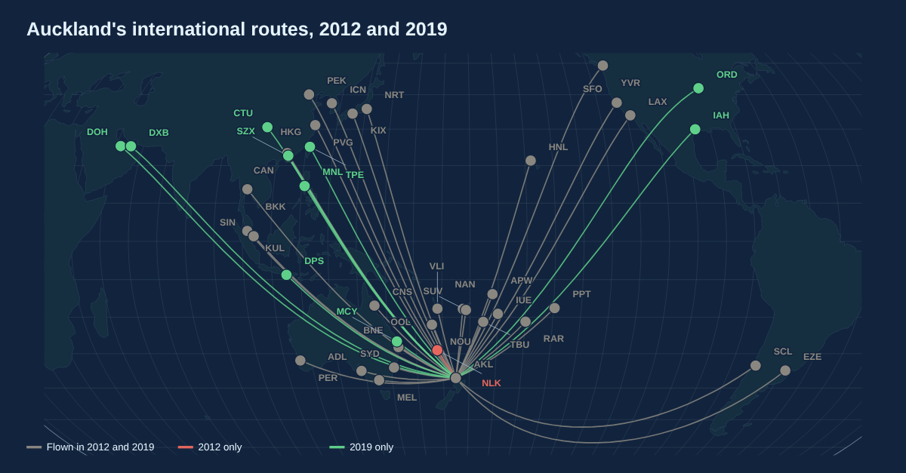
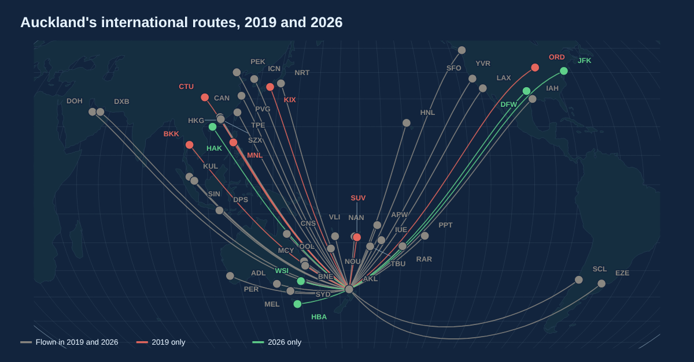

Flight maps: pre and post Covid
I'm challenging myself to post a graph a day for 6 weeks. Day 1 is Aviation Week.
I mapped every international route from Auckland in 2012, 2019 and 2026.



2012 to 2019 was a boom. Auckland went from 33 direct destinations to 42. Doha, Dubai, Houston, Chicago and Bali all arrived.
2019 to 2026 is a reshuffle. While Auckland still has 41 destinations, the list has had a real switch-up.
Gone are Bangkok, Osaka, Manila, Suva and Chicago. Thai never came back after Covid, and Air New Zealand paused Chicago in 2024 over engine problems. But we've got new flights to New York, Dallas, Hobart, Haikou and the new Western Sydney airport.
The network has tilted towards the United States and away from Asia. International seats are still 9% below 2019, but growing.
Direct international routes from Auckland Airport. Routes with fewer than 50 flights a year are left out, except Western Sydney, which only opened this year.
Maps made with the CSV route map. Try it yourself.